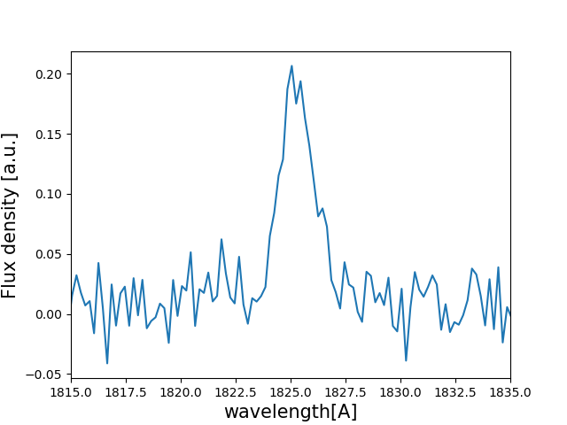

Tutorial : Computing mock line profiles¶
In this tutorial you will, hopefully, learn how to compute mock line Lyman-alpha line profiles with zELDA. The lines computed in this turorial suffer from the tipical artifacts casued by the fact the instruments are not perfect
Mocking Lyman-alpha line profiles¶
Let’s start by loading zELDA and setting the location of the LyaRT grids:
>>> import Lya_zelda as Lya
>>> your_grids_location = '/This/Folder/Contains/The/Grids/'
>>> Lya.funcs.Data_location = your_grids_location
where /This/Folder/Contains/The/Grids/ is the place where you store the LyaRT data grids, as shown in the Installation section.
Now, let’s decide which outflow geometry we want to use. For this tutorial we will use the gas geometry known as Thin Shell in which the instrinsic continum is a gaussian and a continuum with a give equivalent width.
>>> Geometry = 'Thin_Shell_Cont'
Let’s load the data containing the grid:
>>> LyaRT_Grid = Lya.load_Grid_Line( Geometry )
This contains all the necessary information to compute the line profiles. To learn more about the grids of line profiles go to About the LyaRT data grids .
Now let’s define the parameters of the shell model that we want. these are five:
>>> z_t = 0.5 # redshift of the source
>>> V_t = 50.0 # Outfloe expansion velocity [km/s]
>>> log_N_t = 20. # Logarithmic of the neutral hydrogen column density [cm**-2]
>>> t_t = 0.01 # Dust optical depth
>>> log_EW_t = 1.5 # Logarithmic the intrinsic equivalent width [A]
>>> W_t = 0.5 # Intrinsic width of the line [A]
>>> F_t = 1. # Total flux of the line
Now let’s set the quality of the line profile:
>>> PNR_t = 10.0 # Signal to noise ratio of the maximum of the line.
>>> FWHM_t = 0.5 # Full width half maximum diluting the line. Mimics finite resolution. [A]
>>> PIX_t = 0.2 # Wavelength binning of the line. [A]
Now he have verything, let’s compute the line simply by doing:
>>> w_Arr , f_Arr , _ = Lya.Generate_a_real_line( z_t , V_t, log_N_t, t_t, F_t, log_EW_t, W_t , PNR_t, FWHM_t, PIX_t, LyaRT_Grid, Geometry )
And… It’s done! w_Arr is a numpy array that contains the wavelength where the line profile is evaluated. Meanwhile, f_Arr is the actuall line profile.
Let’s plot the line by doing
>>> import pylab as plt
>>> plt.plot( w_Arr , f_Arr )
>>> plt.xlabel('wavelength[A]' , size=15 )
>>> plt.ylabel('Flux density [a.u.]' , size=15 )
>>> plt.xlim(1815,1835)
>>> plt.show()
This should show something like this
{kind=link}
Plotting cooler line profiles¶
If you want a cooler and more ‘accurate’ plot of the line profile you can use:
>>> w_pix_Arr , f_pix_Arr = Lya.plot_a_rebinned_line( w_Arr , f_Arr , PIX_t )
>>> plt.plot( w_pix_Arr , f_pix_Arr )
>>> plt.xlabel('wavelength[A]' , size=15 )
>>> plt.ylabel('Flux density [a.u.]' , size=15 )
>>> plt.xlim(1815,1835)
>>> plt.show()
{kind=link}
Lya.plot_a_rebinned_line is just a function that returns the line profile and wavelength array in a cool way to plot them. You probably shouldn’t use for science the output of Lya.plot_a_rebinned_line, just for plotting.